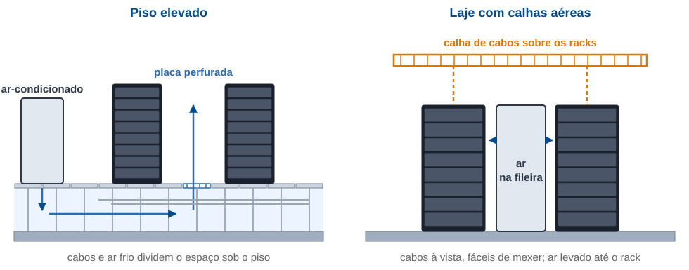
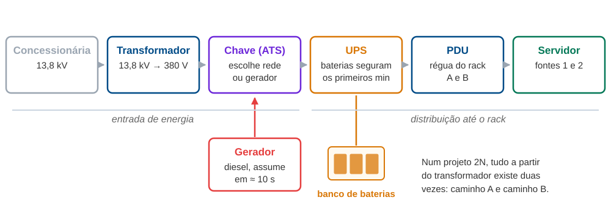
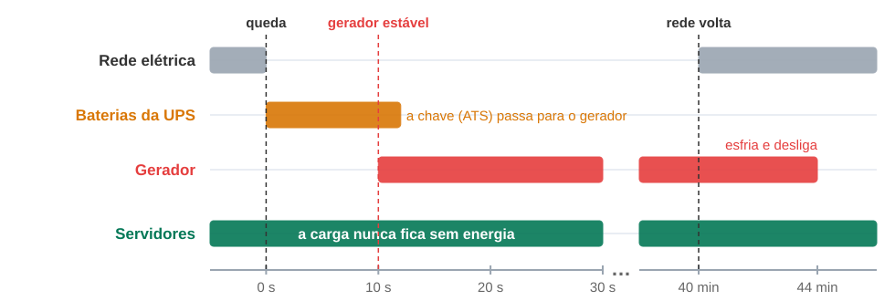
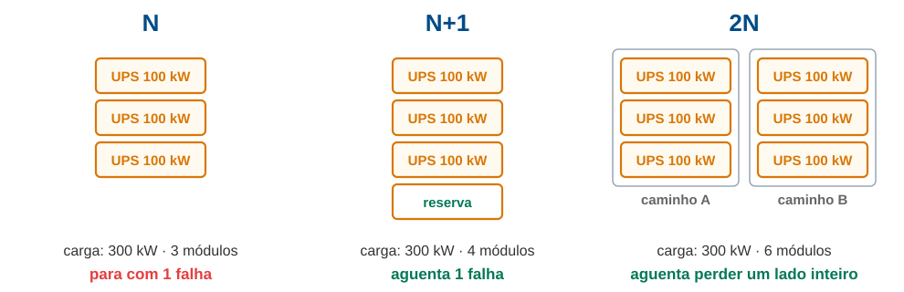
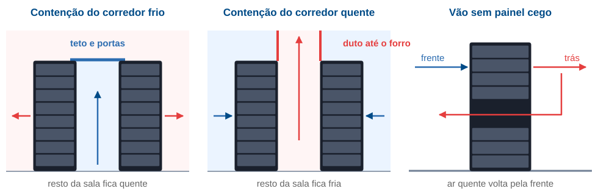
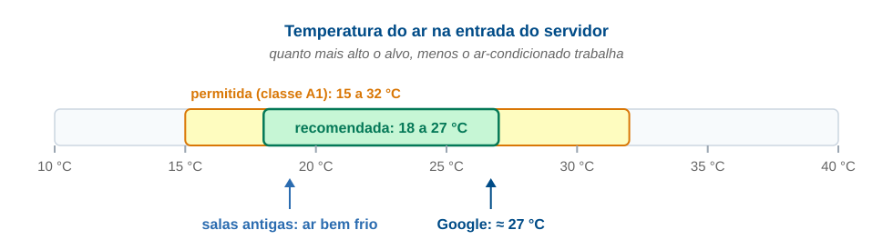
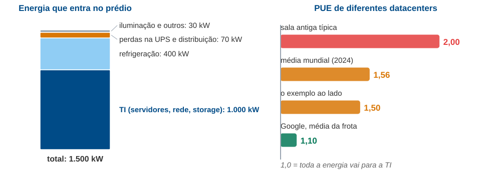
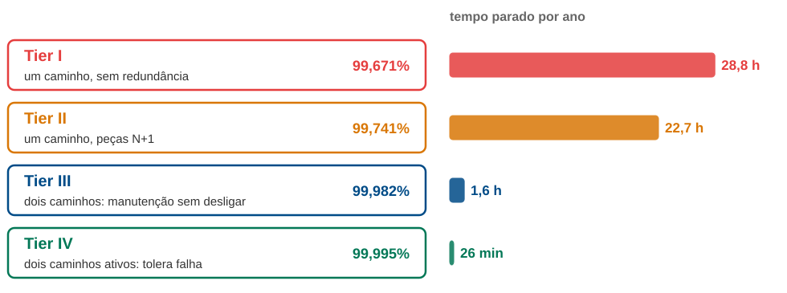
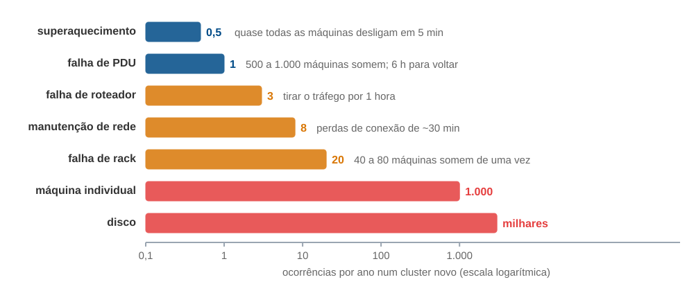
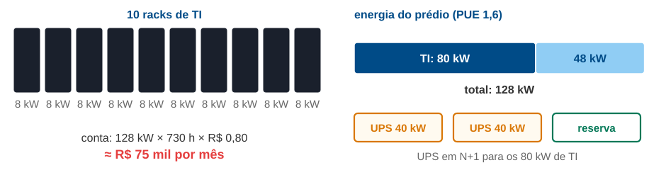

Na Aula 01, o servidor ganhou peças em dobro (discos, fontes, ventiladores) para não parar. Mas ele continua dependendo de duas coisas que vêm de fora: energia e ar frio.
O fio desta aula
Todo watt que entra no servidor sai como calor. O datacenter é o prédio que traz os watts sem interrupção e leva o calor embora, gastando o mínimo possível com isso.

Piso elevado
Placas de 60 × 60 cm sobre pedestais, de 30 a 90 cm acima da laje. O vão é ao mesmo tempo duto de ar e passagem de cabos: com o tempo, os cabos acumulam e bloqueiam o ar.
Laje com calhas aéreas
Cabos de dados e de energia em calhas separadas sobre os racks, à vista. O ar frio chega por dutos ou por unidades na própria fileira. É o padrão nos projetos novos de alta densidade.

Chave de transferência (ATS)
Percebe a queda da rede, manda o gerador partir e troca a entrada quando ele estabiliza.
UPS (nobreak)
Entrega energia limpa o tempo todo; quando a rede cai, as baterias seguram a carga sem nenhum corte.
PDU
A régua inteligente do rack: distribui e mede o consumo por tomada. Uma do circuito A, outra do B.

Cada peça cobre a fraqueza da anterior. A bateria é instantânea mas dura minutos; o gerador dura dias (enquanto houver diesel), mas leva segundos para partir. Juntos, os servidores não percebem a queda.

N é o mínimo que a carga precisa. N+1 soma uma peça de reserva: barato e cobre a falha de um módulo. 2N duplica o sistema inteiro: cobre também a falha do quadro, do cabo, ou a manutenção de um lado todo, e custa o dobro.
Os servidores puxam ar pela frente e sopram pela traseira. Virando as fileiras frente com frente e costas com costas, o ar frio e o ar quente ficam em corredores separados e não se misturam.

Corredor frio fechado
Mais simples de instalar em salas existentes. A sala vira o lado quente: ruim para quem trabalha nela.
Corredor quente fechado
O ar quente vai direto ao retorno; a sala fica confortável. Mais comum em projetos novos.
Painel cego
Uma placa de plástico de poucos reais que fecha cada U vazio. Sem ela, nenhuma contenção funciona.

Mais quente é mais barato
O que importa é o ar que entra no servidor, não a sensação de quem entra na sala. Cada grau a mais no alvo reduz o trabalho do compressor e aumenta as horas do ano em que dá para usar o ar de fora.
Free cooling
Quando o ar externo está mais frio que o alvo, o datacenter troca calor com ele (ou com água resfriada pelo ar) e desliga os compressores. Em climas quentes como o do Rio, as horas de free cooling são poucas.

Um prédio consome 1.500 kW, dos quais 1.000 kW chegam aos equipamentos de TI. O PUE é a razão entre os dois: 1,5. Para cada watt de computação, meio watt vai para refrigeração, perdas e iluminação.
$E_\text{TI}$: energia que chega aos equipamentos de TI

A diferença que importa está entre o II e o III: com dois caminhos, qualquer peça pode ser desligada para manutenção sem parar a sala. No Tier IV, os dois caminhos ficam ativos e uma falha em qualquer ponto não derruba nada.

Mesmo com tudo o que vimos, um cluster de milhares de máquinas perde uma máquina por dia e vários discos por dia. Num certo tamanho, a disponibilidade deixa de vir só do prédio e passa a vir do software: dados replicados em várias máquinas, racks e salas.
O caso
Uma sala com 10 racks de 8 kW, PUE estimado de 1,6, UPS em módulos de 40 kW em N+1, energia a R$ 0,80 por kWh. Em duplas, 5 minutos: quanta energia o prédio puxa, quantos módulos de UPS comprar e quanto custa a conta de luz por mês?
Carga de TI
10 × 8 kW = 80 kW. Com PUE 1,6, o prédio puxa 80 × 1,6 = 128 kW.
UPS
80 ÷ 40 = 2 módulos (N); em N+1, 3 módulos. A UPS alimenta só a TI, não o ar-condicionado.
Conta mensal
128 kW × 730 h = 93.440 kWh; × R$ 0,80 ≈ R$ 75 mil por mês, dos quais R$ 28 mil são a parte além da TI.

Energia
Rede → transformador → ATS → UPS → PDU.
Bateria cobre os segundos; gerador, as horas.
N+1 ou 2N para cada peça.
Calor
Corredores frio e quente.
Contenção e painéis cegos.
Alvo de 18 a 27 °C na entrada.
Medida
PUE = total ÷ TI.
Tiers I a IV: um ou dois caminhos.
Na escala grande, o software tolera a falha.
Barroso, L. A.; Hölzle, U.; Ranganathan, P. The Datacenter as a Computer: Designing Warehouse-Scale Machines. 3ª ed. Morgan & Claypool, 2019. Cap. 4 e 5.
ANSI/TIA-942-C. Telecommunications Infrastructure Standard for Data Centers. 2024.
ASHRAE TC 9.9. Thermal Guidelines for Data Processing Environments. 5ª ed., 2021.
Uptime Institute. Tier Standard: Topology; Global Data Center Survey, 2024.
The Green Grid. PUE: A Comprehensive Examination of the Metric. White Paper 49, 2012; ISO/IEC 30134-2.
Dean, J. Designs, Lessons and Advice from Building Large Distributed Systems. Palestra no LADIS, 2009.
Google. Data Centers: Efficiency (google.com/about/datacenters/efficiency).